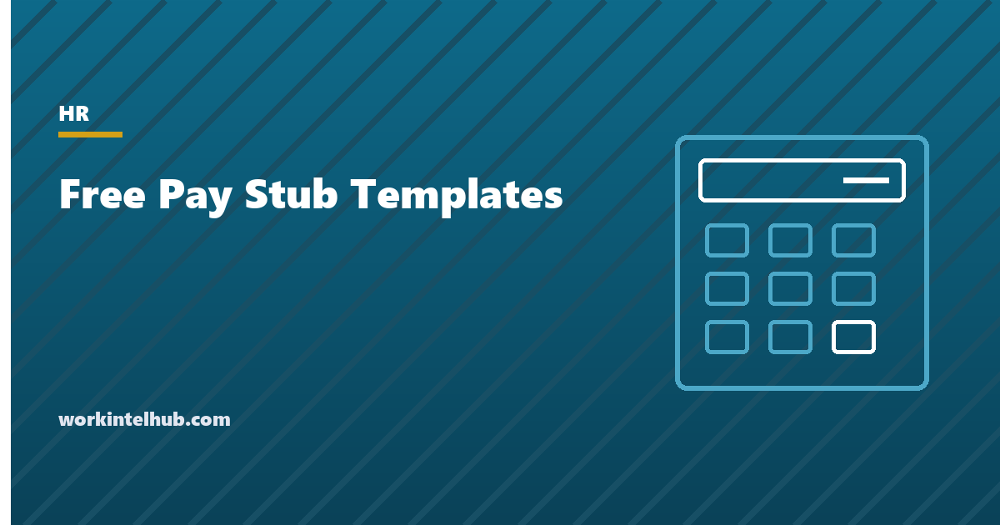

Free Pay Stub Templates

A pay stub, or wage statement, is the record that shows an employee how gross pay became net pay: hours and rates, earnings by type, each deduction, employer contributions where shown, and year-to-date totals. Federal law requires employers to keep these records but not to give them to employees; forty-one states and the District of Columbia do require a statement, and several specify exactly what it must contain. California lists nine required items and fines employers per employee per pay period for getting them wrong.
The templates here are an hourly pay stub with overtime, a salaried pay stub, a contractor payment statement (which is not a pay stub and says so), and a pay register for a period. The Excel version calculates gross, deductions and net from the inputs; Word and PDF are for small employers who issue statements by hand. The page also summarises the state rules on whether a statement is required, whether it may be electronic, and what it must show.
Download the templates
Free files: Word, Excel and PDF
Three files, free, no email required. Word to edit, Excel to track, PDF to print or share.
Templates open in Microsoft Word, Excel, Google Docs and Sheets, LibreOffice and any PDF reader. Free to use and adapt for your organisation.
What is in the templates
- Hourly pay stub. Regular, overtime, double time, holiday and PTO hours at their rates, pre-tax deductions, taxes calculated on taxable wages, year-to-date columns and net pay.
- Salaried pay stub. Salary per period from annual salary and pay frequency, with the same deduction structure.
- Contractor payment statement. A statement for 1099 contractors that is explicitly not a pay stub, because contractors have no withholding.
- Pay register. One line per employee per period, with gross, deductions and net totalled.
What a pay stub must show
Where a state requires a statement, the common minimum is the pay period, gross wages, each deduction and its purpose, and net pay, with hours and rates for hourly employees. California's Labor Code section 226 is the strictest widely cited: gross wages, total hours (non-exempt), piece rate and units if applicable, all deductions, net wages, the period's dates, the employee's name and the last four digits of an ID (never the full Social Security number), the employer's legal name and address, and all applicable hourly rates with hours at each. Paid sick leave balances must also appear in California and a few other states. New York's Wage Theft Prevention Act requires rates, basis of pay, overtime rates, hours and allowances. Penalties for missing items run per employee per pay period and are a frequent class-action claim.
Never print a full Social Security number. Show the last four digits or an employee ID; several states prohibit the full number and all of them regret it.
Paper or electronic
Most states that require a statement allow electronic delivery through a payroll portal or email, provided the employee can access and print it; Delaware, Minnesota and Oregon make electronic the default with a right to request paper; Hawaii requires consent before going electronic; California requires a written statement unless the employee elects electronic access that is printable. Keep the ability to print, give employees a way to opt for paper, and keep copies for at least three years under the FLSA and longer where state law requires (four years in California). The pay periods page covers frequency, and the final paycheck page the last statement an employee receives.
The gross-to-net arithmetic
- Gross: regular hours at the rate, overtime at one and a half times the regular rate (which includes most bonuses and differentials), plus other earnings. The overtime calculator handles the regular rate.
- Pre-tax deductions: health premiums under a section 125 plan reduce both income tax and FICA wages; 401(k) contributions reduce income tax wages but not FICA.
- Social Security at 6.2 percent up to the annual wage base and Medicare at 1.45 percent with the additional 0.9 percent above $200,000; the templates apply the base rates.
- Income tax from the employee's W-4 and the IRS tables, entered rather than calculated; payroll software does this.
- Post-tax deductions last: garnishments within the limits of the Consumer Credit Protection Act, Roth contributions, union dues.
- The salary to hourly calculator and hours calculator feed the inputs.
Key takeaways
- Forty-one states and DC require a pay statement; nine do not; California and New York specify the contents and fine per period.
- Show period, gross, hours and rates, every deduction, net, YTD and a partial ID; never a full Social Security number.
- Electronic delivery is allowed in most states if the employee can print it; three states make paper an opt-out and Hawaii makes electronic an opt-in.
- Pre-tax health reduces FICA wages; 401(k) does not; overtime uses the regular rate.
Frequently asked questions
Are employers required to give pay stubs?
Not under federal law, which requires records but not statements. Forty-one states and the District of Columbia require a statement each pay period; Alabama, Arkansas, Florida, Georgia, Louisiana, Mississippi, Ohio, South Dakota and Tennessee do not. Several states specify the contents and penalise omissions.
What must a pay stub include?
Commonly the pay period, employee and employer identification, gross wages, hours and rates for hourly employees, each deduction with its purpose, net pay and year-to-date totals. California adds piece rates, all applicable hourly rates, the last four digits of an ID and the paid sick leave balance; New York adds the basis of pay and allowances.
Can pay stubs be electronic?
In most states that require a statement, yes, if the employee can access and print it. Delaware, Minnesota and Oregon default to electronic with a right to paper; Hawaii requires consent to go electronic; California requires a written statement unless the employee elects printable electronic access.
Do independent contractors get pay stubs?
No. Contractors are paid against invoices with no withholding and receive a Form 1099-NEC for the year. The contractor payment statement in the download records the payment without implying employment; issuing a contractor a pay stub is evidence of misclassification.
How long should pay records be kept?
Three years for payroll records under the FLSA and two years for the time records behind them; four years for the IRS; longer in several states (California requires four years for wage statements). Most employers keep everything for at least four years.